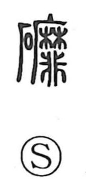

磨

Uncategorized
Kun: migaku | On: ma
to polish ・ to grind ・ to rub ・ to wear away
Explanation
A phono-semantic character with 麻 serving as the phonetic, signaling the On reading ma and evoking motions done with forceful, fingertip pressure. Classical sources gloss it as “to polish,” and by extension “to wear away,” the sense seen in compounds like mametsu (to be worn out and vanish). Because 麻 marks the same dynamic hand action, 磨 and 摩 often substitute for one another in usage, as in magai (cliff-side carvings) and masatsu (rubbing, friction). Traditional lexica also record a related stone-radical form, 礦, under the same phonetic line. Altogether, 磨 centers on the actions of polishing, rubbing, and grinding that gradually abrade a surface.